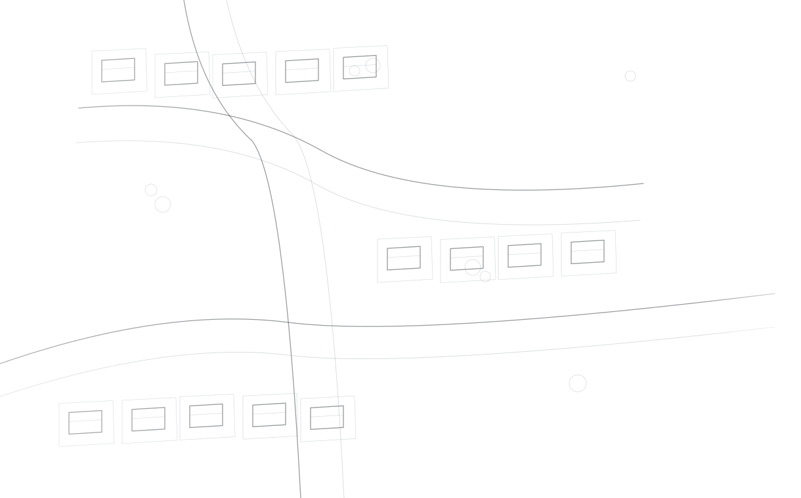

UNDERSTAND
THE RULES.
SEE THE POTENTIAL.
Every site has a context, a set of constraints and a range of possibilities. Planning brings these into focus.
CLARITY BEFORE
COMMITMENT.
Before plans become commitments, we look closely at the land, the rules and the decisions ahead.
Resource consent advice.
Establish what the planning framework allows, where consent may be required and what an application needs.
02 / ASSESSMENT & EVIDENCEAEEs & planning reports.
Build a clear assessment of the proposal, its effects and the evidence needed to support it.
03 / RELATED APPROVALSBuilding consent coordination.
Bring the right designers and technical specialists into the approval process at the right time.
04 / EARLY DEVELOPMENT THINKINGSite feasibility & planning advice.
Understand a site's potential, the obstacles worth resolving and the investigations that matter first.
When a proposal needs architectural drawings or specialist input, explore how we coordinate the right team .
ONE PROJECT.
THE RIGHT EXPERTISE.

Considered development is collaborative. KOVA can help identify and coordinate the architectural, surveying and engineering expertise a project needs, keeping design decisions connected to the planning pathway.
From the first brief through drawings, assessments and council submissions, our role is to keep the relevant questions and inputs aligned.
See how the process worksTHE DETAIL
BEHIND THE DECISION.
Move from broad planning questions to the details that can shape an application.
LEARN THE
LANDSCAPE.
Understand how different approvals work and what they may mean for a proposal.
Resource consent.
The planning permission question.
When might this matter?
- Land use or development that triggers relevant district plan rules
- Subdivision of land
- Earthworks, vegetation clearance or other activities requiring approval
- Activities affecting natural resources where regional rules apply
What information is involved?
- A clearly described proposal and relevant site and design plans
- Assessment of the applicable rules, policies and planning matters
- An Assessment of Environmental Effects (AEE) proportionate to the proposal
- Relevant technical assessments and supporting information where required
During the transition to the Planning Act 2026 and Natural Environment Act 2026, councils continue to receive and decide resource consent applications under the amended Resource Management Act 1991.
Planning rule reviews, application strategy, planning assessment, AEE preparation and coordination of relevant specialist inputs.
WHAT ARE YOU
CONSIDERING?
Start with your idea. Explore the questions that could shape its design, timing and approval pathway.
THE WHOLE
PICTURE IS IN
THE DETAIL.
A consent application rests on decisions, evidence and context — not paperwork alone. Explore the elements of a considered assessment.
Establish the physical and legal context.
Planning begins with the property—not the proposed drawing.
The assessment should describe the location, site, surrounding environment and the legal interests that matter to the proposal.
- Site address, legal description, title and relevant interests
- Existing activity, built form, neighbouring context and access
- Known constraints or matters needing further investigation
A desktop map does not confirm precise boundaries, ownership interests or site conditions.
Every proposal calls for its own assessment of rules, site conditions and effects.
ONE QUESTION
AT A TIME.
For the fundamentals behind each decision, explore our concise Planning Explained guides.
OUR APPROACH.
Understand what happens when you work with KOVA.